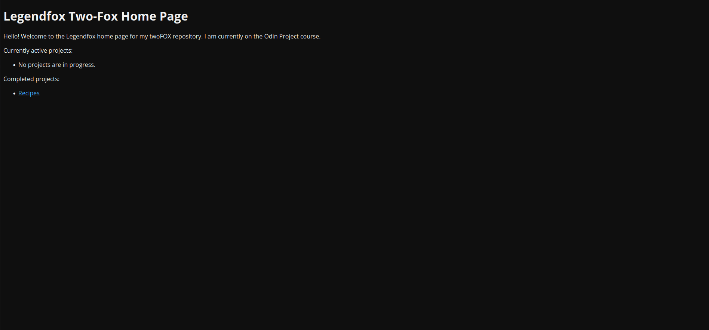

Welcome to the one-and-only Two Fox Home Page Archive.
As the site evolves, I will share images here of the site through different times of growth. Enjoy! Note: If you want to see a larger version of the images, you can right click them to open them in full.

The Two-Fox homepage on 6/18/2024
The Two-Fox homepage on 7/31/2024. Major changes include the addition of a top-navigation bar.